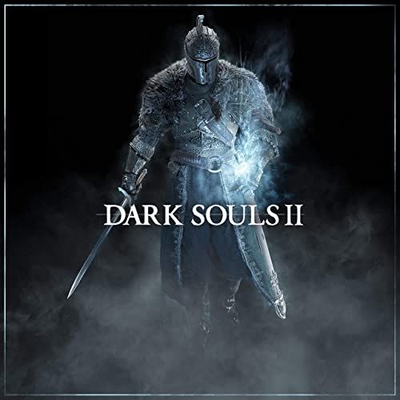
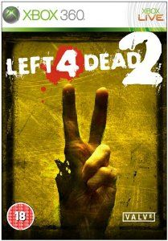
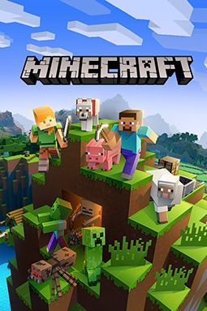
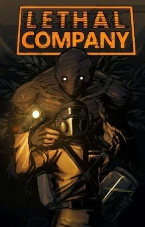

Catalogo de jogos

Dark Souls II (2014 – FromSoftware)
Um RPG de ação sombrio onde o jogador explora o reino decadente de Drangleic enfrentando monstros, chefes difíceis e uma maldição que corrói a humanidade. É conhecido por sua atmosfera medieval sombria, exploração e alta dificuldade.

Left 4 Dead 2 (2009 – Valve)
Um jogo de tiro cooperativo em primeira pessoa ambientado durante um apocalipse zumbi moderno. Jogadores formam um grupo de sobreviventes e precisam atravessar cenários infestados, trabalhando em equipe para enfrentar hordas e infectados especiais. É focado em coop e ação rápida.

Minecraft (2011 – Mojang Studios)
Um jogo de construção e sobrevivência em um mundo aberto cheio de blocos. O jogador explora, coleta recursos, cria ferramentas e constrói estruturas no seu próprio ritmo. Possui estética simples, liberdade total de criação e modos como sobrevivência e criativo. É um dos jogos mais influentes da história.

God of War Ragnarök (2022 – Santa Monica Studio)
Um jogo de ação e aventura que continua a jornada de Kratos e seu filho Atreus pela mitologia nórdica. Eles enfrentam deuses, monstros e o presságio do Ragnarök enquanto buscam entender seus destinos. Combina combate intenso, narrativa emocional e cenários épicos inspirados nas lendas nórdicas.

Lethal Company (2023 – Zeekerss)
Um jogo cooperativo de terror e exploração onde você e sua equipe trabalham para uma corporação que coleta sucata em luas abandonadas e cheias de criaturas perigosas. O objetivo é entrar, pegar tudo que for valioso e escapar vivos antes que monstros, armadilhas e eventos aleatórios acabem com a missão. É focado em coop, tensão e humor caótico.